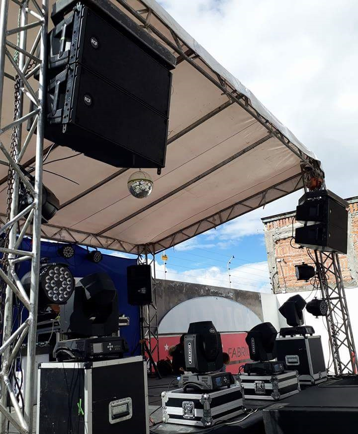

NOSOTROS
|
MUSICOLOGO, es una empresa especializada en Sonido e Iluminación Profesional, audiovisuales y efectos especiales, alquiler de todo tipo de material para eventos, personal técnico y de montaje, sonorizaciones y montaje de todo tipo de shows, así como en la producción de todo tipo de espectáculos, festivales, discomóviles, unidad móvil.
MUSICOLOGO sonido e iluminación pone a tu disposición un equipo de profesionales y una gran variedad de servicios contando con los mejores medios técnicos. Cada proyecto se estudia minuciosamente, teniendo en cuenta donde, cuando y como se realiza para llevarlo todo a cabo con la profesionalidad que nos caracteriza y que el cliente se merece
Organizamos y montamos todo tipo de fiestas privadas o públicas, actos sociales, conferencias, reuniones, presentaciones, ruedas de prensa, bodas, cumpleaños, exposiciones, ferias, conciertos y cualquier otro tipo de evento, discomóviles, karaoke, técnicos de sonido e iluminación, montadores, dj’s, presentadores etc. Trabajamos para Condominios, colegios, asociaciones, empresas, universidades, particulares, en toda la ciudad
Hacemos todo tipo de instalaciones de sonido e iluminación y llevamos el mantenimiento en salas, locales, teatros, hoteles, colegios, restaurant
Tenemos en propiedad karaoke, estudio de grabación, nuestras propias discomóviles, dj’s, técnicos, personal de carga y descarga, vehículos para el transporte de material y personal para conciertos…
Tenemos los precios más competitivos del mercado, nos ajustamos siempre al presupuesto del cliente. Trabajamos con primeras marcas. Descuentos y ofertas en todos nuestros servicios para nuestros mejores clientes. Nuestros precios sin competencia en alquiler de sonido y luces y la calidad y profesionalidad que ofrecemos, hacen que MUSICOLOOGO siga creciendo año tras año, gracias a la confianza ofrecida por nuestros clientes.
Si precisan de nuestros servicios, presupuesto o información ampliada, no duden en ponerse en contacto con nosotros sin compromiso, estaremos encantados de atenderles y les aseguramos el mejor precio del mercado.

|